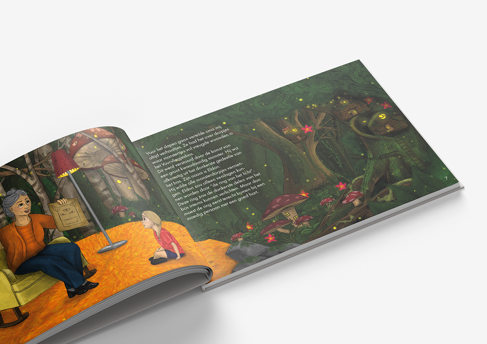
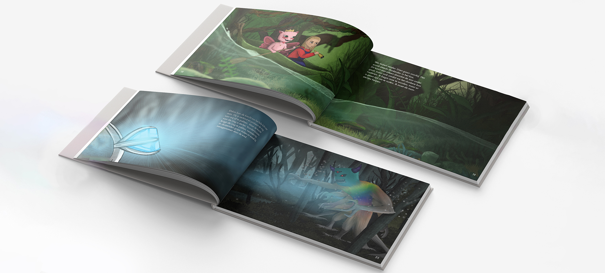
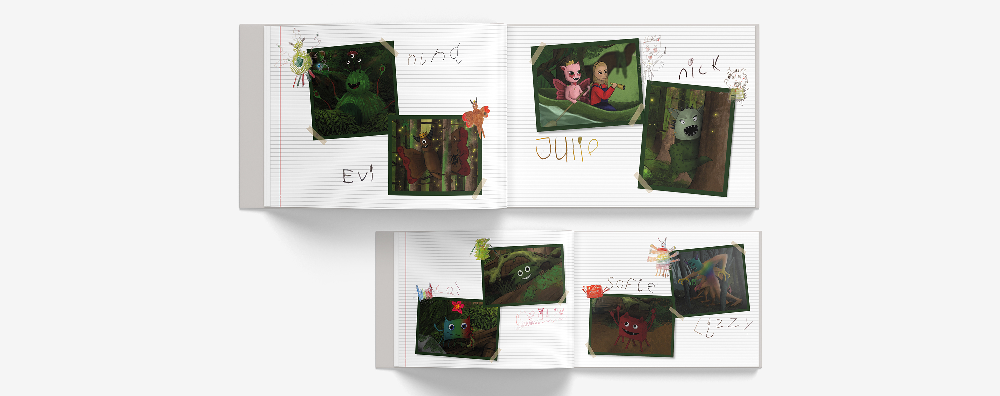
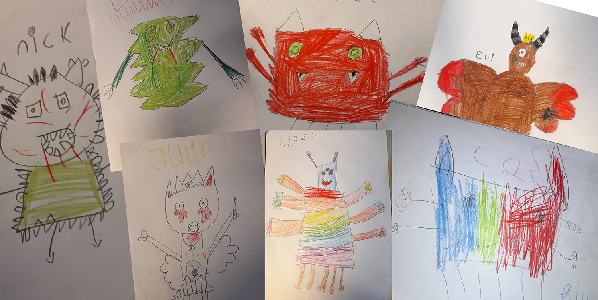

Mila's Monsters

De opdracht
"Mila's Monsters" was mijn afstudeeropdracht voor Mediavormgeving op het mbo. We mochten zelf een opdracht kiezen die aansloot bij onze eigen interesses, en voor mij werd dat een kinderboek. Maar dan een boek waar kinderen niet alleen naar zouden kijken, maar ook zelf aan hadden meegewerkt.
Ik ben naar een basisschool gegaan en heb de kinderen van groep 3 gevraagd om hun eigen monstertje te tekenen. Daar kwamen ontzettend leuke, eigenzinnige tekeningen uit: elk kind had een heel eigen idee van hoe een monster eruit hoort te zien.
Aanpak & resultaat
Uit alle kindertekeningen koos ik een selectie monstertjes die goed bij het verhaal pasten, en die heb ik opnieuw geïllustreerd zodat ze samen één geheel vormden en pasten in de stijl van het boek, met behoud van wat elk kind er zelf in had gestopt.
Die geïllustreerde monstertjes werkte ik verder uit tot complete spreads en een kaftontwerp die samen het verhaal vertellen. Het eindresultaat is een volledig geïllustreerd kinderboek waarin de kinderen zelf een creatieve rol hebben gespeeld.



